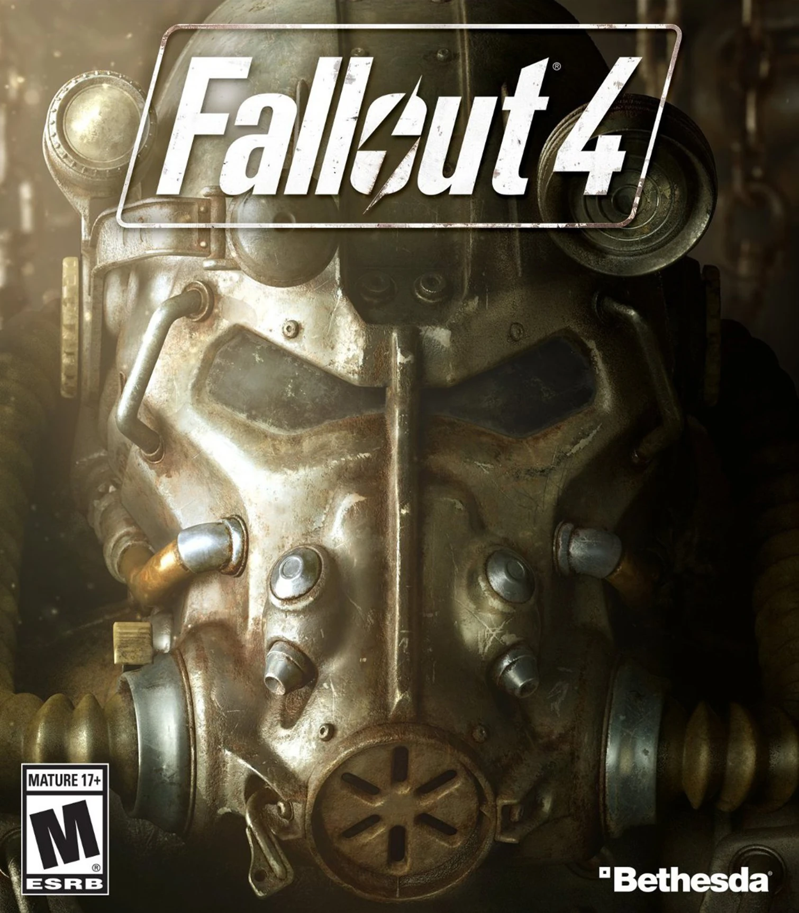
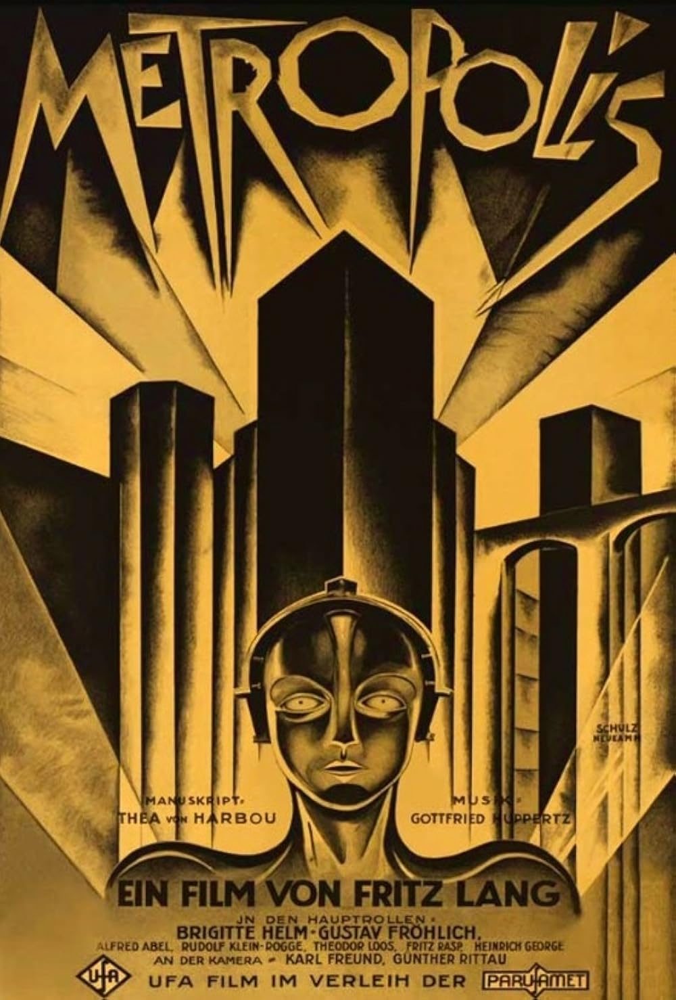
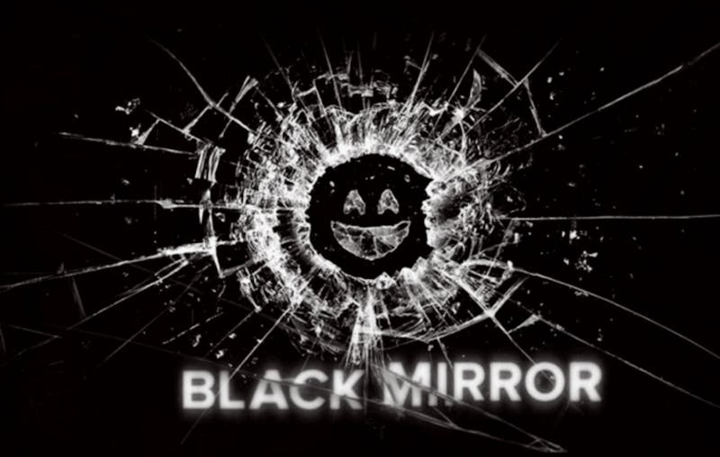
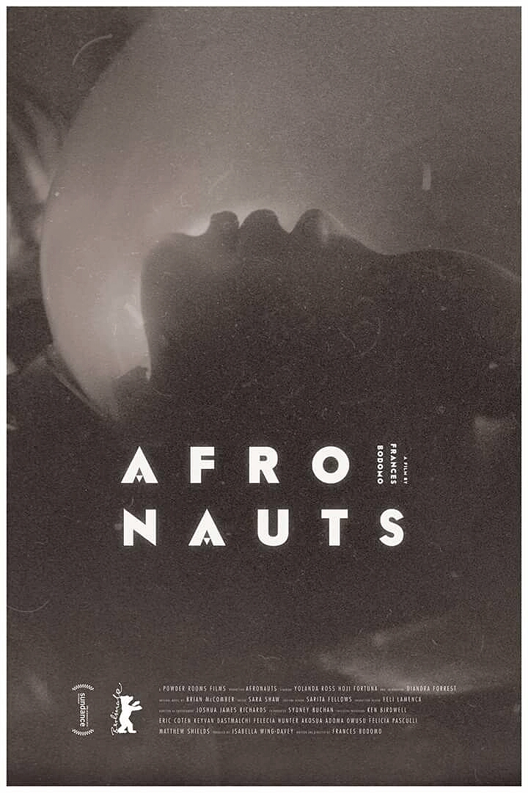

My Favorite Media
Explore some of my favorite media that inspire my work. Hover over each item to learn more about its themes and significance.
Dystopian / Cyberpunk

Fallout 4
Video Game: 2015
Fallout 4
Post-nuclear future where synths, AI, and transhumanism challenge morality and identity.

Metropolis
Silent Film: 1927
Metropolis
A visionary silent film about class division, automation, and the soul of a mechanized society.
AI & Consciousness

Detroit: Become Human
Video Game: 2018
Detroit: Become Human
Androids question their roles and fight for rights.

Black Mirror
TV Series: 2011 - Ongoing
Black Mirror
Short stories about tech’s eerie grip on humanity.
Speculative Fiction

Afronauts
Short Film: 2014
Afronauts
A short film by Frances Bodomo exploring Afrofuturism and Africanfuturism, imagining Zambia's space program in the 1960s.